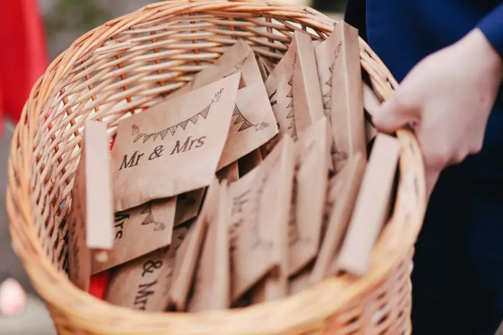
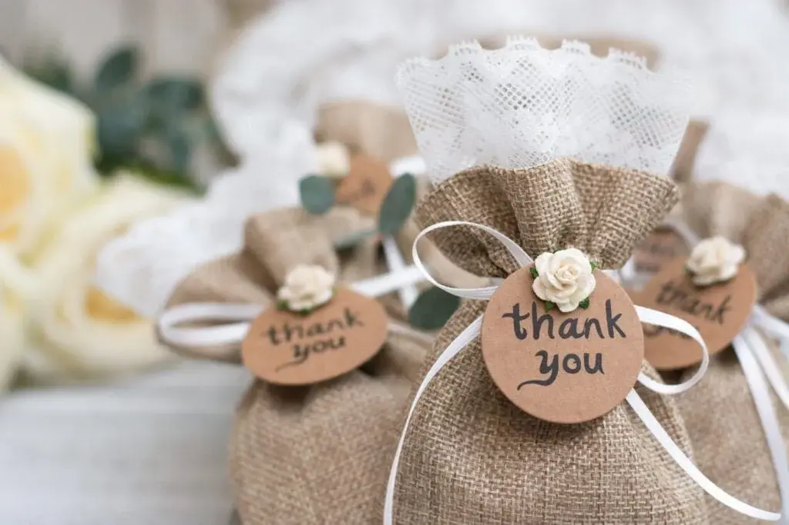

The latest trend for your wedding in Nouvelle-Aquitaine is the wedding bag.
A perfect companion that will delight your guests.

A new trend!
Inspired by the welcome bag, the wedding bag is the ideal way to break with the tradition of the little pouch of sugared almonds as a gift for your wedding guests. Usually a tote bag, it is filled with small, minimalist gifts and plenty of accessories your guests might need during your wedding. A simple, eco-friendly way to please everyone.
Your bag can of course be personalised, for example with your initials and the date of the big day. It can also reflect your theme, whether chic, vintage, romantic or boho. The wedding bag is filled with lots of little items such as traditional sugared almonds, a fan against the heat, tissues for emotional moments, a detailed programme of the day for the impatient, or car decorations for the "car lovers".
Plenty of choice!
There are many options, and they can be designed in your image or that of your wedding. A great way to make sure the day stays engraved in your memory and your guests'. You can also slip in hand sanitiser or personalised face masks, a thoughtful touch when health is a concern.
A gift for the impatient
Handed out at a specific moment of your day, it can also help keep your guests entertained while they wait. That might be during the photo session or as soon as they arrive, just before your ceremony. Ideally, find the right moment so they can discover their wedding bag at leisure.

Don't panic!
As a wedding planner and wedding designer, I specialise in bespoke services. I'm here to listen and advise, and to offer my services to make your day unforgettable!
Lovely Day Event offers several services
Wedding planning
I step in at every stage of your preparations and guide you through your choices, bringing ideas and suggestions so that your wedding looks like no one but you.
Wedding design
Creative and passionate, I am a certified Wedding Designer and I create a scenographic atmosphere that matches the theme of your wedding.
On-the-day coordination
I will be the conductor of your day, managing the suppliers, the set-up of your decor and the smooth running of this beautiful day.